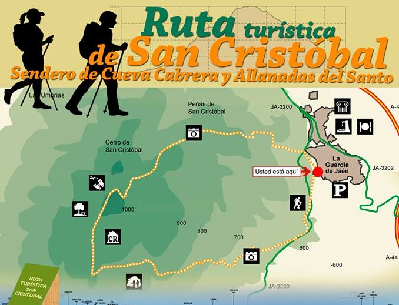

Ermita de Nuestra Señora de la Coronada Lugar de devoción y peregrinación, con impresionantes vistas y un ambiente de tranquilidad.
Ermita de San Sebastián: Pequeña pero con gran valor histórico y espiritual, vinculada a la protección contra epidemias en siglos pasados.
Sendero de Cueva Cabrera - Allanadas del Santo: Un recorrido entre naturaleza y leyenda, con vistas espectaculares y un entorno ideal para los amantes del senderismo.
Descubre la historia, el patrimonio y la belleza natural de La Guardia de Jaén a través de estas rutas únicas. ¡Explora y disfruta!
